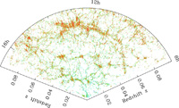

August 17, 2008
|
+ enlarge  |
| A map of the distribution of galaxies in a thin wedge on the sky, from the Sloan Digital Sky Survey (SDSS-II). The earth is at the vertex of the wedge, and the most distant objects shown are 1.3 billion light years away. Red points mark galaxies whose light is dominated by old stars, while blue points show galaxies with younger populations of stars. Galaxies are arrayed in clumps, filaments, and sheets, which are interweaved with bubbles and tunnels, the cosmic voids. The new study shows that these voids are empty of massive dark matter halos as well as luminous galaxies, and that the numbers and sizes of voids agree with theoretical models in which they grow by gravity starting from a smooth distribution of dark matter in the early universe. (Credit: M. Blanton and SDSS) |
CHICAGO - The largest 3-dimensional maps of the universe show that galaxies lie in filamentary superclusters interlaced by vast zones of emptiness, cosmic voids tens of millions of light years across that contain few or no bright galaxies. Researchers analyzing the two largest maps, from the Sloan Digital Sky Survey (SDSS-II) and the Two-Degree Field Galaxy Redshift Survey (2dFGRS), have concluded that these voids are also missing the "halos" of invisible dark matter that bright galaxies reside in.
"Astronomers have wondered for a quarter-century whether these voids were 'too big' or 'too empty' to be explained by gravity alone," said University of Chicago researcher Jeremy Tinker, who led the new study. "Our analysis shows that the voids in these surveys are exactly as big and as empty as predicted by the `standard' theory of the universe."
Tinker presented his findings today at an international symposium in Chicago, titled "The Sloan Digital Sky Survey: Asteroids to Cosmology." A paper detailing the analysis will appear in the September 1 edition of The Astrophysical Journal, with the title "Void Statistics in Large Galaxy Redshift Surveys: Does Halo Occupation of Field Galaxies Depend on Environment?"
A central element of the standard cosmological theory, Tinker explained, is cold dark matter, which exerts gravity but does not emit light, and which accounts for more than 80 percent of the mass in the universe. Dark matter is smoothly distributed in the early universe, but over time gravity pulls it into filaments and clumps and empties out the spaces between them. Galaxies form when hydrogen and helium gas falls into collapsed dark matter clumps, referred to as "halos," where it can form luminous stars.
"We wanted to see whether something strange is happening to the dark matter halos in the regions where we don't see galaxies," said team member David Weinberg of Ohio State University. "Maybe the halos are there, but they just don't manage to form stars. Then the voids would look emptier than they really are, because they don't have anything our telescopes can see."
To address this question, the researchers first determined the relation between galaxies and dark matter halos by matching the galaxy clustering in dense regions -- the web of filamentary superclusters that interweaves the network of empty bubbles and tunnels. With this relation in hand, they used some of the world's largest supercomputer simulations to predict the number and sizes of voids.
Princeton University graduate student Charlie Conroy measured the sizes of voids in the SDSS-II maps. "When we used galaxies brighter than the Milky Way to trace structure, the biggest empty voids we found were about 75 million light years across," said Conroy. "And the predictions from the simulations were bang-on."
The sizes of voids are ultimately set, Conroy explained, by the small variations in the primordial distribution of dark matter, and by the amount of time that gravity has had to grow these small variations into large structures. While studies from the 1990s showed that gravity could create large regions of low matter density, the new analysis shows that these regions should be truly empty of bright galaxies and the halos massive enough to host them, and that the theoretically predicted sizes agree precisely with observations.
The agreement between the cosmological simulations and the measurements holds separately for red and blue galaxies, said Tinker. "Red galaxies are made of old stars, while a lot of the light in blue galaxies comes from young stars," he explained. "Halos of a given mass seem to form similar galaxies, both in numbers of stars and in the ages of those stars, regardless of where the halos live."
"Void galaxies are different from typical galaxies in more crowded parts of the universe," said Drexel University astronomer Michael Vogeley, who did not participate in this study but has led earlier investigations of voids in the SDSS and 2dFGRS. "The void galaxies are fainter, bluer, and are forming more stars. But these differences may arise because these vast rural stretches of the universe contain lower mass halos than the cosmic cities and suburbs, where most galaxies form."
SDSS and SDSS-II have mapped the 3-dimensional distribution of nearly one million galaxies, over about one-fifth of the sky. The 2dFGRS map contains 250,000 galaxies over 10 percent of the sky. Because the voids are themselves so big, enormous maps like these are required to obtain precise statistics on their sizes and frequency.
The SDSS and 2dFGRS do not probe the very faintest galaxies. However, a recent preprint by Tinker and Conroy shows that the good agreement between cosmological simulations and the emptiness of voids extends to maps of nearby cosmic structure traced by these "dwarf" galaxies, whose dark matter halos are fifty times less massive than the Milky Way's.
"My favorite theory of cosmic voids," said Weinberg, "is one that I read long ago in The Weekly World News: Everything in the voids was destroyed by space aliens during a giant intergalactic space war. The real explanation seems to be much duller. But more reassuring."
SDSS is managed by the Astrophysical Research Consortium for the Participating Institutions. The SDSS-II Participating Institutions are the American Museum of Natural History, Astrophysical Institute Potsdam, University of Basel, University of Cambridge, Case Western Reserve University, University of Chicago, Drexel University, Fermilab, the Institute for Advanced Study, the Japan Participation Group, Johns Hopkins University, the Joint Institute for Nuclear Astrophysics, the Kavli Institute for Particle Astrophysics and Cosmology, the Korean Scientist Group, the Chinese Academy of Sciences (LAMOST), Los Alamos National Laboratory, the Max-Planck-Institute for Astronomy (MPIA), the Max-Planck-Institute for Astrophysics (MPA), New Mexico State University, Ohio State University, University of Pittsburgh, University of Portsmouth, Princeton University, the United States Naval Observatory, and the University of Washington.